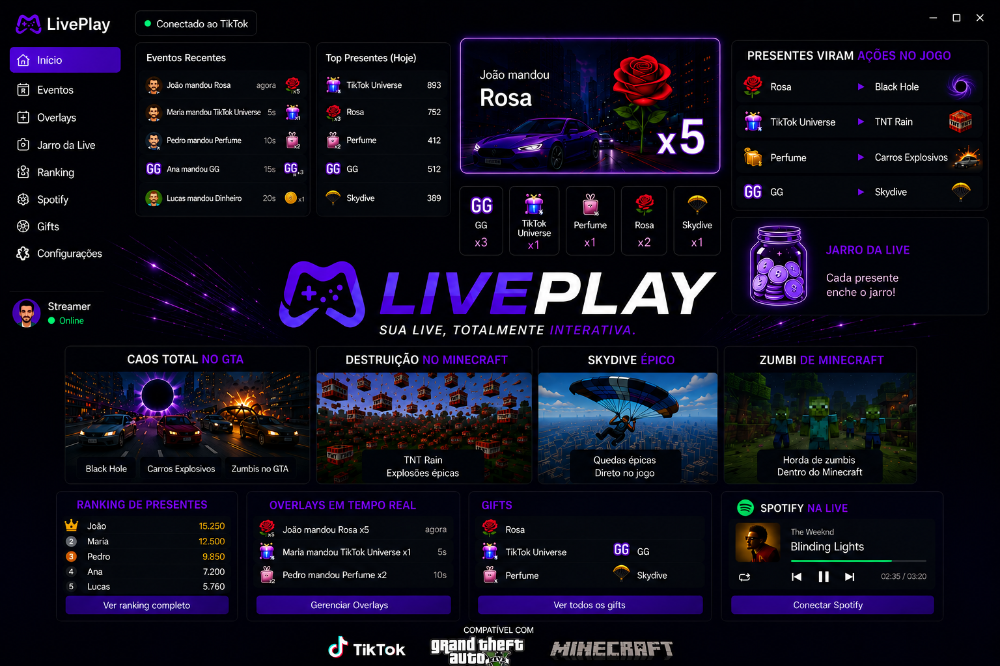
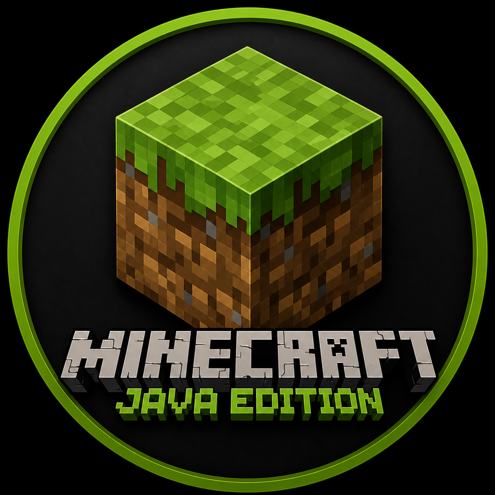
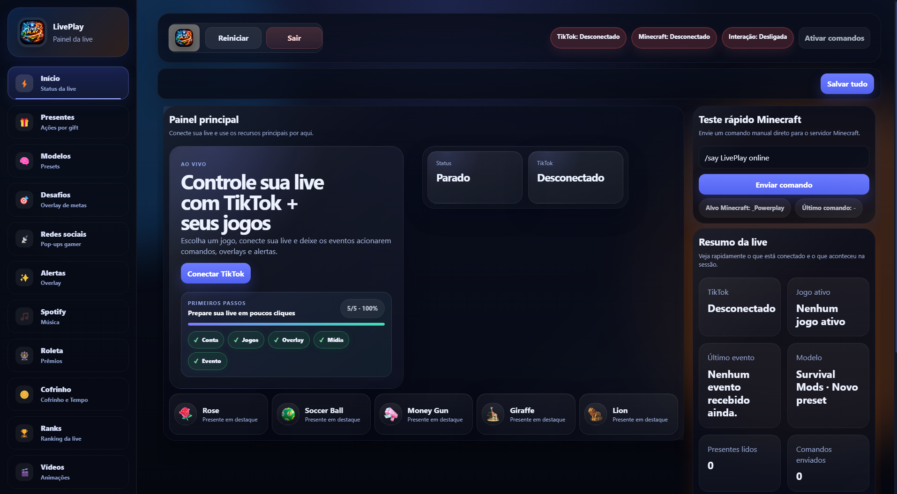
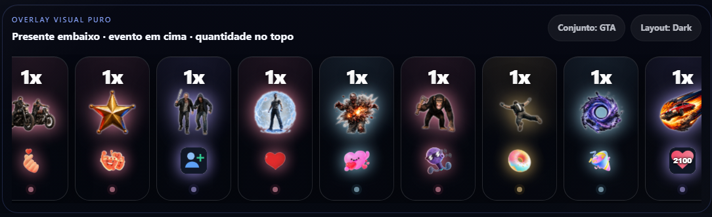
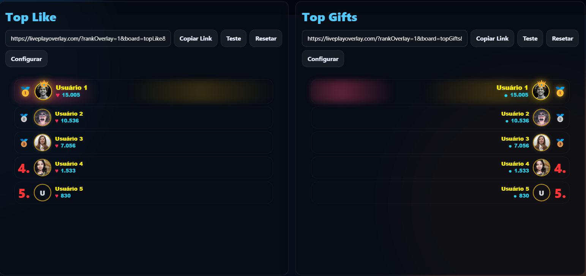
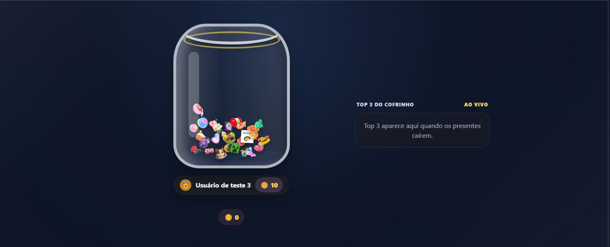
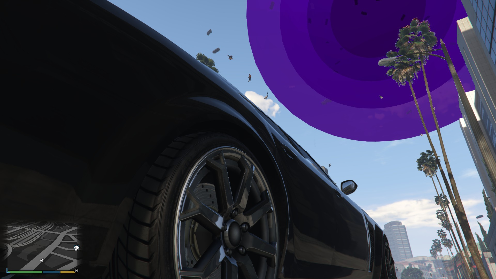
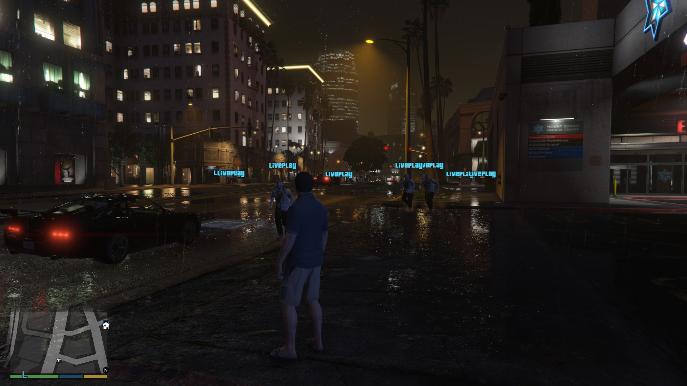
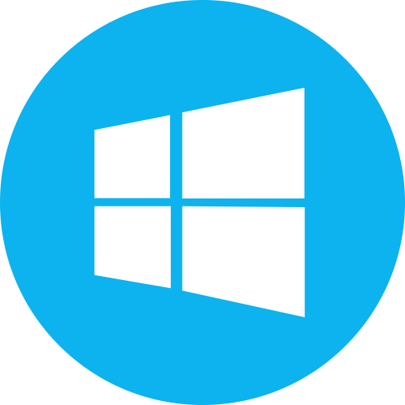

🎮
Jogos integrados
Use conjuntos e modelos por jogo para acionar comandos, efeitos e eventos sem perder organização.
Transforme presentes, likes, follows, chats e eventos da live em comandos, overlays, alertas, ranks, roletas, cofrinho, vídeos e automações dentro dos seus jogos.

O LivePlay junta automações, overlays e integrações de jogos em uma experiência profissional para criadores.
Use conjuntos e modelos por jogo para acionar comandos, efeitos e eventos sem perder organização.
Presentes, likes, follows, chats, shares e eventos alimentam automações e overlays em tempo real.
Links públicos para OBS e TikTok Live Studio com alertas, ranks, vídeos, cofrinho e efeitos visuais.

Comandos, mobs, servidores, plugins e automações para transformar a live em gameplay interativo.
Eventos da live podem causar caos no jogo com bridge própria, efeitos e comandos em tempo real.
Ranks de presentes, moedas, combos, likes e competições para manter o público participando.
Transforme presentes em progresso visual, metas, moedas, top viewers e efeitos premium.
Login, PRO/FREE, backup na nuvem, restauração e proteção para usar o LivePlay com segurança.
Presentes, likes, comentários, metas e rankings podem acionar comandos, overlays e efeitos no jogo. O LivePlay conecta a energia do TikTok ao Minecraft, GTA V e à tela do OBS.
Do painel aos overlays, do Minecraft ao GTA V: transforme presentes e eventos da live em gameplay, caos e engajamento ao vivo.
Conecte sua live, acompanhe eventos, veja status, modelos ativos e envie testes rápidos sem sair do LivePlay.


Layouts premium para OBS e TikTok Live Studio com atualização em tempo real.

Rankings ao vivo para aumentar disputa e engajamento da audiência.

Transforme gifts em progresso visual e metas durante a live.

Eventos da live podem criar efeitos extremos e momentos virais.

Comandos customizados para trollagens, desafios e ações no jogo.
Presentes e eventos podem invocar entidades, TNT e desafios no servidor.
O público pode causar caos, desafios, explosões, mobs e efeitos em tempo real durante a gameplay.
O FREE libera o essencial. O PRO desbloqueia recursos premium para lives mais fortes.
Ideal para testar o LivePlay e configurar os primeiros recursos.
Libere overlays, integrações premium, roleta, desafios, Spotify, cofrinho avançado e mais.
O site gera o checkout seguro pelo mesmo backend usado no app. Depois do pagamento aprovado, abra o LivePlay com esse e-mail para sincronizar a licença PRO.

Windows Mais jogos em breveSim. O LivePlay gera links de overlay para usar como fonte de navegador no OBS.
Sim. Você pode usar os overlays como fonte de navegador também no TikTok Live Studio.
Sim. O plano FREE libera recursos básicos para começar.
Sim. O instalador possui atualização automática para receber novas versões.
Sim, usando sua conta LivePlay e backup na nuvem. A conta possui controle de sessão para segurança.
Não. O app tem modelos, presets, backups e configuração guiada para acelerar o primeiro uso.
Instale no Windows, faça login e conecte sua live TikTok para começar.